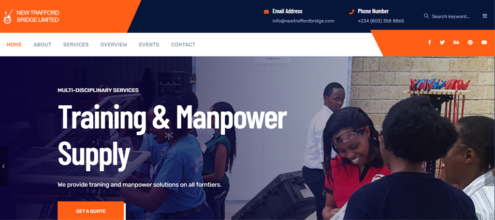
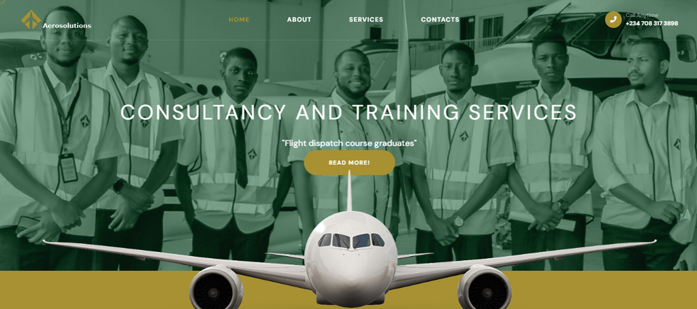
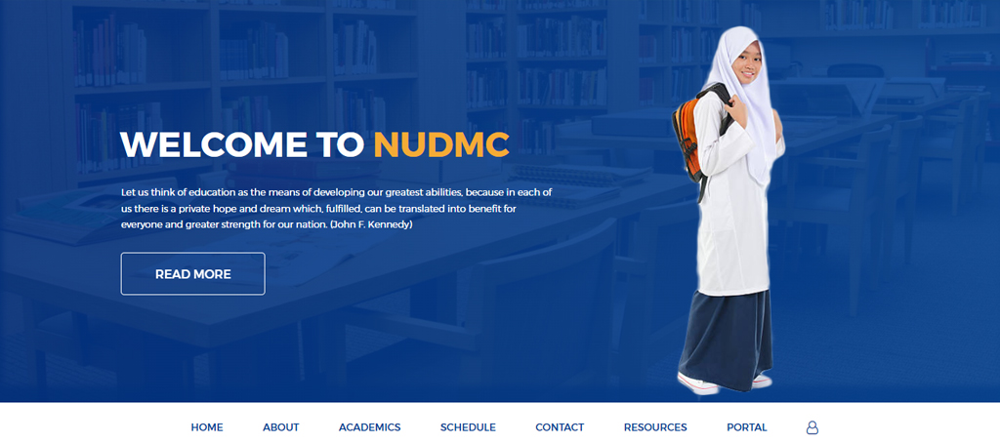

My Projects
New Trafford Bridge Limited Website
Brief Description:
The New Trafford Bridge Limited (NTBL) website project involved creating an online platform to showcase their extensive range of industrial services across West Africa, including software development, electrical solutions, fuels and energy solutions, oil & gas services, and well engineering. Using HTML5, CSS3, JavaScript, Bootstrap, and PHP, the website was designed for a professional and responsive user experience, highlighting NTBL's expertise and facilitating easy client communication.
As the lead Front End Developer, I was responsible for designing and developing the user interface, ensuring responsiveness across devices, and writing clean, maintainable code. I collaborated with the development team for seamless integration, adhered to web development best practices. This project enhanced my skills in front-end development and teamwork, delivering a comprehensive solution for NTBL’s online presence.
This project allowed me to leverage my skills in front-end development while also gaining experience in working with a diverse team to deliver a comprehensive online solution for an industrial client.
Live VisitAeroSolutions Consultancy and Training Services Limited Website
The Aerosolutions Limited website project involved creating a dynamic online presence for Aerosolutions Consultancy and Training Services (ACTS) Limited. The website showcases their extensive expertise and services in aviation consultancy and training, offering comprehensive guidance to investors and organizations for addressing challenges and achieving growth. The site highlights their specialized team of pilots, engineers, and travel and tourism experts.
Technologies used in this project include HTML5, CSS3, JavaScript, and Bootstrap to ensure a professional, user-friendly, and responsive design. As the lead Front End Developer, my role encompassed designing and implementing the user interface, ensuring cross-device compatibility, and writing clean, maintainable code. I worked closely with the development team within Aerosolution to tailore my design to the organization's need, resulting in a robust online platform that effectively represents Aerosolutions Limited’s expertise and services.
Live VisitNAWAIR-UD-DEEN MODEL COLLEGE WEBSITE
The NAWAIR-UD-DEEN Model School website project involved developing an engaging and informative online platform for a community model primary and secondary school. The website serves as a comprehensive resource for students, parents, and staff, providing essential information about the school's academic programs, extracurricular activities, admissions process, and community events. Technologies used in this project include HTML5, CSS3, JavaScript, Bootstrap, PHP and MySQL to create a user-friendly, dynamic, and responsive design.
As the lead Front End Developer, my role involved designing and implementing the user interface, ensuring the website is accessible across various devices, and writing clean, efficient code. I collaborated with the school administration to ensure the website accurately reflects the school's values and mission, resulting in a polished and functional platform that supports the school's communication and outreach efforts.
Live Visit